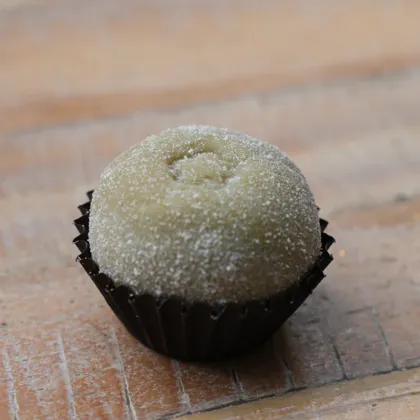
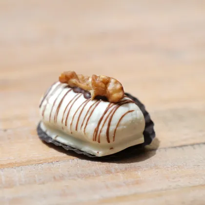
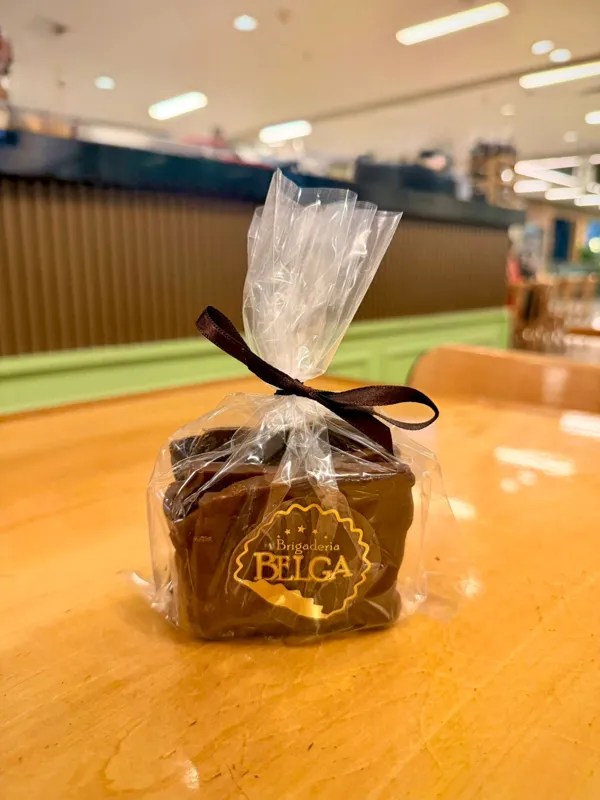

Uma confeitaria artesanal que nasceu em 2013, cresceu com as receitas da fundadora e, treze anos depois, abriu a primeira loja em Salvador.



A Belga foi fundada por Luciana de Oliveira em Feira de Santana. Ela continua dentro da cozinha, coordenando a equipe e cuidando das criações e das receitas, do brigadeiro de capim santo à torta folhada de morango.
Fonte: Canal In, 19/08/2025 · Alô Alô Bahia, 14/08/2025
Espaço para a voz da fundadora: como começou, a primeira receita, de onde veio o nome. Precisamos de uma frase dela e de uma foto na cozinha.

Cada marco traz a fonte, para a história ser contada do jeito que aconteceu.
A confeitaria abre em Feira de Santana. Hoje a loja da cidade fica na Rua São João Batista, 200, no Santa Mônica.
Fonte: bio do Instagram @brigaderia.belga ("Bahia • Desde 2013")
A marca passa a contar com a gestão do Grupo Encanto Regional, à frente a empresária Myrthes Lavigne. A fundadora segue cuidando das receitas e da produção.
Fonte: Alô Alô Bahia, 14/08/2025
Antes de ter loja na capital, a Belga apresentou bolos, quiches, doces e cafés no espaço da CASACOR Bahia 2025, até 7 de setembro.
Fonte: Canal In, 19/08/2025
Abre a primeira unidade de Salvador, no piso L3 Leste do Shopping Barra: vitrine de doces e salgados, cafeteria e almoço executivo. A loja de Feira segue funcionando.
Fontes: Alô Alô Bahia, 04/03/2026 · Bahia Econômica, 04/03/2026
A unidade Salvador · Pituba aparece no site oficial com pedidos pelo iFood.
Fonte: brigaderiabelga.com.br (18/11/2026). Endereço e formato da unidade a confirmar com a marca.
Árvores de doce de 25 cm, panetones trufados, cakebox e quiches de Natal entram no cardápio de encomendas.
Fonte: página de encomendas de Salvador no site oficial (18/11/2026)

"Doces artesanais com sabor belga" é como a própria marca se apresenta. O nome também assina os doces da casa:
Fonte: título e cardápio de encomendas do site oficial (18/11/2026).
Proposta de texto: "O chocolate belga é a nossa assinatura. É ele que dá o ponto do brigadeiro tradicional, da cobertura do Crock e do banho dos bombons." Confirmar com a marca se o chocolate usado é mesmo belga, em quais receitas, e de onde vem o nome.
Shopping Barra, piso L3 Leste. Seg a sáb, das 9h às 22h, e dom, das 13h às 21h. Ou monte a sua caixa e retire na loja.